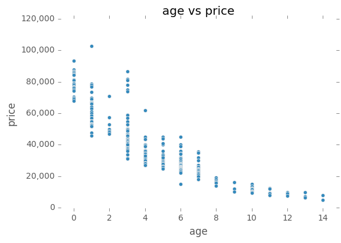
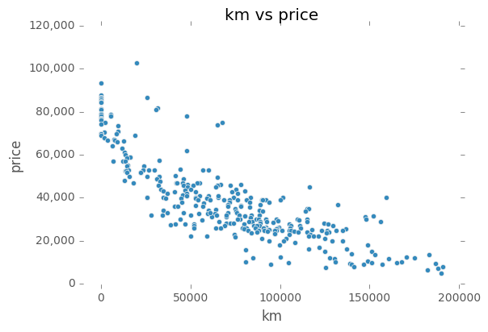

Mercedes-Benz E-Class Statistics
Linear Regression
OLS Regression Results
| Dep. Variable: | price | R-squared: | 0.793 |
| Model: | OLS | Adj. R-squared: | 0.792 |
| Method: | Least Squares | F-statistic: | 633.4 |
| Date: | Mon, 30 Jan 2017 | Prob (F-statistic): | 7.10e-114 |
| Time: | 23:08:54 | Log-Likelihood: | -210.53 |
| No. Observations: | 334 | AIC: | 427.1 |
| Df Residuals: | 331 | BIC: | 438.5 |
| Df Model: | 2 | | |
| Covariance Type: | nonrobust | | |
| coef | std err | t | P>|t| | [95.0% Conf. Int.] |
| const | -1.023e-16 | 0.025 | -4.1e-15 | 1.000 | -0.049 0.049 |
| km | -0.3706 | 0.044 | -8.341 | 0.000 | -0.458 -0.283 |
| age | -0.5594 | 0.044 | -12.591 | 0.000 | -0.647 -0.472 |
| Omnibus: | 92.553 | Durbin-Watson: | 0.747 |
| Prob(Omnibus): | 0.000 | Jarque-Bera (JB): | 198.823 |
| Skew: | 1.411 | Prob(JB): | 6.70e-44 |
| Kurtosis: | 5.515 | Cond. No. | 3.24 |


